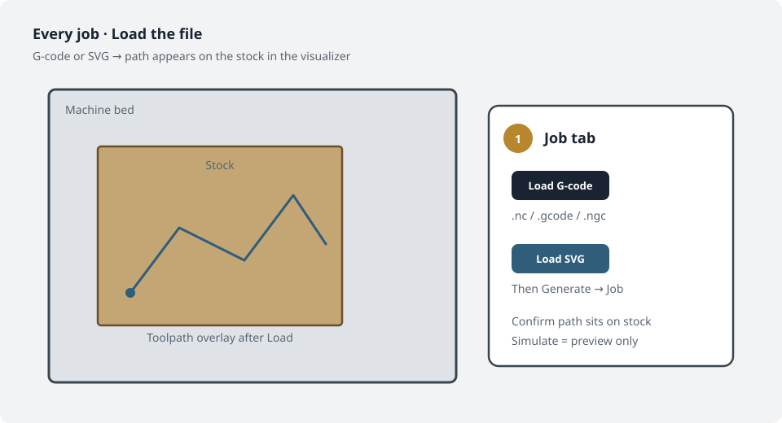
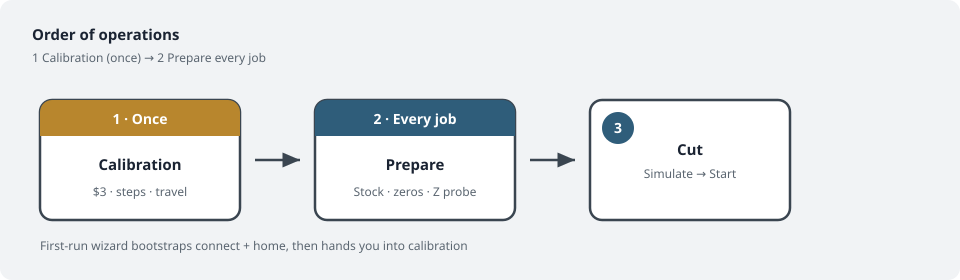

Every new blank: set stock + tool, mark
Material XYZ, probe Z, load the path, then
Mark ready. That unlocks Verify
(Simulate → Start) — not Start from Prepare. This is
not calibration — the machine is already tuned.
Connect / home live in Phase 0 / Calibrate when the session needs
them.
1
Stock + tool
Enter W × L × T · map corner (NW NE / SW SE) · bit type + Ø ·
Next
Stock = the board you’re cutting. Tell SharpCNC how big it is and
which corner sits where so the picture matches the real wood. Bit
Ø sizes the tool marker and SVG defaults.
Phase switcher → Prepare (after Calibrate is
done). Linked or Virtual first.
Expect
Prepare opens on stock size / thickness / bed corner + bit on
one dense screen.
Enter width × length × thickness. Corner map:
NW NE top row, SW SE bottom.
Confirm the stock step, then set bit type and diameter Ø mm.
Expect
Visualizer stock rectangle matches the blank; Next unlocks after
confirms.
Jog tip to stock corner →
Set XY zero + stock … at tip · optional
Trace perimeter…
Material origin = where X=0 and Y=0 for this cut (often a
corner of the wood). Jog the bit tip there and tap Zero XY — no
probe plate for this step. Compact jog lives on this screen.
Keep Z clear of clamps. Jog the bit tip to the stock corner that
is your material origin (usually SW). Pick that corner button.
Expect
Corner control highlights (e.g. SW). Tip sits above that corner
of the real blank.
Tap
Set XY zero + stock … at tip (preferred).
Fallback: Zero XY only if you only want
material origin without moving stock.
Expect
Status: XY zero set — Next unlocked. Material
X/Y read ~0; Machine does not jog from this tap.
Optional: Trace stock perimeter… to walk the
blank bounds at safe Z (cancelable).
Expect
Toolhead traces the rectangle; if the path will miss the wood,
re-check sizes / corner / zero.
Plate on stock top · enter thickness →
Run Z probe → retract · remove plate →
Next
Probe plate = a metal pad on top of the wood. The bit gently
touches it so the machine knows where the top surface is (Material
Z0). Remove the plate before you cut — never leave it under the
bit.
Clip the probe lead on the bit. Place the conductive plate on
the stock top under the tip (not the bare bed).
Enter Plate thickness mm (~15–20 mm for
Chris’s plate).
Expect
Idle, not Alarm; probe pin not already ON. Soft limits allow the
downward seek.
Tap Run Z probe (or
Manual Zero Z paper-feel fallback).
Expect
G38.2 seeks down, contacts, then Material Z0 = stock face
(plate thickness offset). Alarm 4 = no contact; Alarm 5 =
already contacting.
Retract if offered, then remove the plate and
clip. Confirm plate removed / clamps clear →
Next.
Load (.nc / .gcode) orLoad SVG → Generate → Job · see
the path on the stock
The job file is the drawing the machine will follow. Until you
load it, the bed picture has no path — load before Mark
ready (a new file clears Prepared).

On the Prepare Load step: either
Load (or drag-drop) a
.nc / .gcode / .ngc / .tap file, or use
External jobs / Drive behind one button.
Expect
Filename and line count show; the visualizer draws the toolpath
on the bed / stock rectangle.
Or for a simple 2D picture: Load SVG → set
Engrave / Outline, feed, plunge, depth, safe Z, spindle →
Generate → Job.
Expect
SVG paths preview on the bed, then become a normal job after
Generate (one job at a time).
Confirm the path sits on the stock. Soft-limit check should not
say “outside travel.”
Expect
Path overlay matches the blank; Ready step unlocks.
Text detail:
Jobs & SVG
· loading a new file clears Prepared.
Checklist → Mark ready → Verify →
Simulate → Start → Run
overrides / Hold / Stop
Mark ready means “this blank is set.” Verify is the last look:
soft limits, Simulate dress rehearsal, clear path, then Start.
Run is slim — just watch and override.

On Ready: confirm the short checklist →
Mark ready → Verify.
Expect
Phase switcher unlocks Verify. Start is still
gated until soft-limit OK + Linked + Idle.
In Verify: prefer Simulate
once (preview only). Check plate removed / clamps clear. Then
Start (UI or Demon Shield). Dry-run on for the
first real cut is recommended.
Expect
Banner: Preview — not sending to CNC during
Simulate. Start moves you to Run.
In Run: watch progress; use feed / spindle
overrides on the safety strip; Hold / Resume / Stop as needed.
Expect
Slim chrome only — no probe, load, or Advanced. Stay at the
machine.